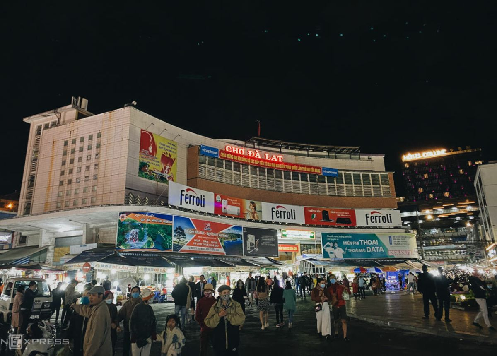
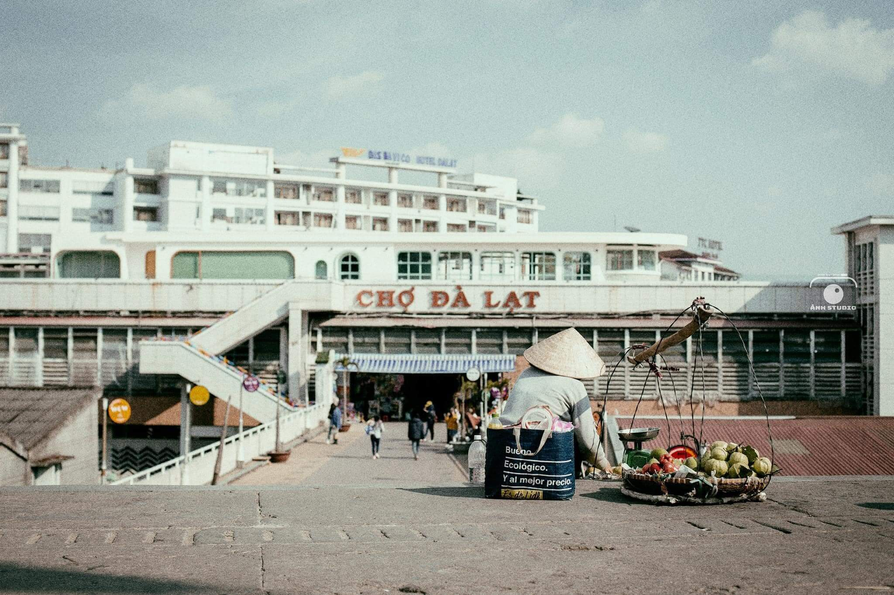
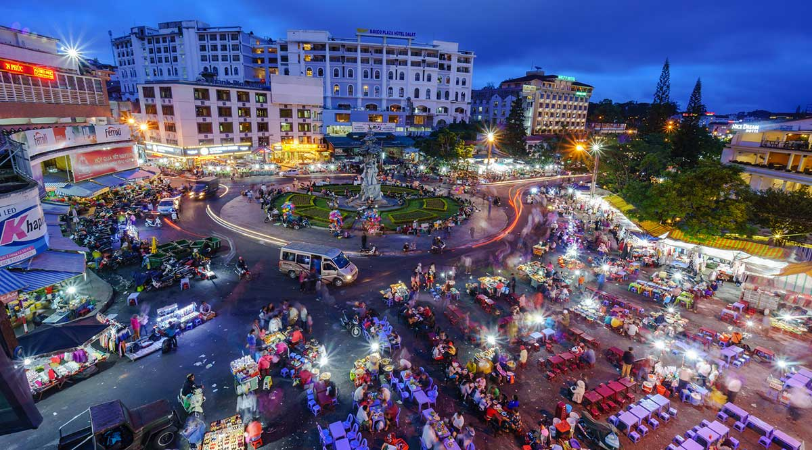
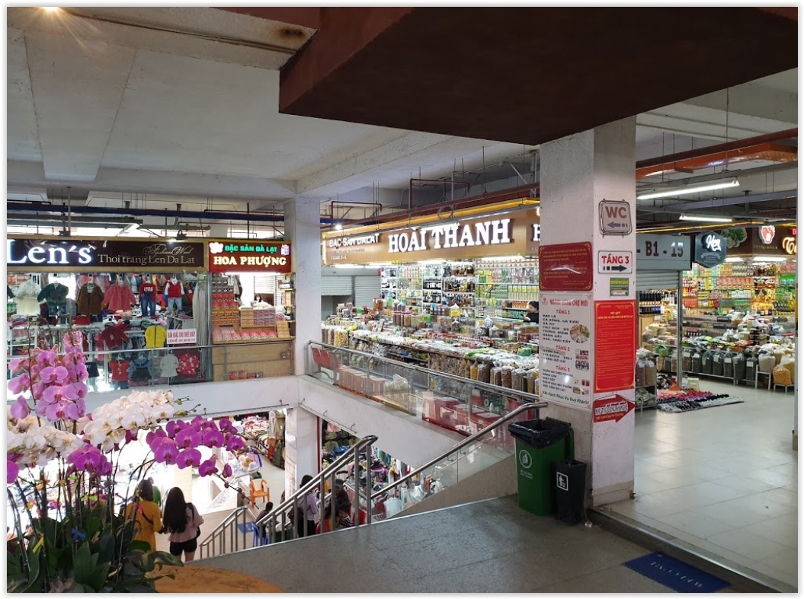

Chợ Đà Lạt, hay còn được gọi là Chợ trung tâm Đà Lạt, là một trong những địa điểm nổi bật và không thể thiếu khi du khách đến thăm thành phố mộng mơ này. Nằm ngay trung tâm thành phố Đà Lạt, chợ không chỉ là nơi giao thương, mua bán sầm uất mà còn là biểu tượng văn hóa đặc trưng, nơi du khách có thể tìm hiểu thêm về đời sống, ẩm thực và phong tục tập quán của người dân địa phương. Với lịch sử lâu đời, chợ Đà Lạt đã trở thành một phần không thể thiếu trong hành trình khám phá Đà Lạt.

Chợ Đà Lạt được xây dựng vào những năm 1930, khi thành phố Đà Lạt bắt đầu phát triển và trở thành một điểm du lịch nổi tiếng. Vào thời điểm đó, chợ chỉ là một khu vực nhỏ, đơn giản phục vụ nhu cầu của cư dân địa phương và những người đến Đà Lạt để sinh sống hoặc du lịch. Tuy nhiên, theo thời gian, chợ đã được mở rộng và trở thành trung tâm giao thương lớn, phục vụ không chỉ cho người dân Đà Lạt mà còn cho cả du khách từ khắp nơi.

Chợ Đà Lạt có một kiến trúc đặc biệt với mái vòm màu đỏ và tường gạch cổ kính, tạo nên vẻ đẹp đặc trưng mà không phải chợ nào cũng có được. Đặc biệt, không gian bên trong chợ luôn nhộn nhịp và đầy màu sắc với các gian hàng bán đủ loại sản phẩm từ rau củ quả tươi ngon, hoa tươi, đến các món đặc sản và quà lưu niệm. Đây là một trong những nơi đầu tiên du khách có thể cảm nhận được không khí Đà Lạt với những sản vật tươi ngon và phong phú.
Chợ Đà Lạt không chỉ thu hút du khách bởi sự sầm uất, mà còn bởi kiến trúc đặc sắc. Tòa nhà chính của chợ có hình dạng mái vòm với những họa tiết đơn giản nhưng rất tinh tế, thể hiện sự kết hợp giữa phong cách kiến trúc phương Tây và những yếu tố truyền thống của văn hóa Việt Nam. Đặc biệt, mặt tiền của chợ được làm bằng kính trong suốt, giúp ánh sáng tự nhiên chiếu vào không gian bên trong, tạo cảm giác thoáng đãng và dễ chịu cho người tham quan.

Khu vực bên ngoài chợ, xung quanh là các dãy cửa hàng, tiệm ăn, quán cà phê, tạo nên một không gian sống động và nhộn nhịp. Chợ Đà Lạt không chỉ là nơi bán hàng hóa mà còn là nơi giao lưu văn hóa, gặp gỡ giữa các cư dân địa phương và khách du lịch. Bên cạnh những gian hàng bán hoa tươi, đặc sản Đà Lạt, du khách còn có thể tìm thấy các quầy bán quà lưu niệm như đồ thủ công mỹ nghệ, tranh ảnh, đồ gỗ mỹ nghệ hoặc các sản phẩm dệt may đặc trưng của vùng đất cao nguyên này